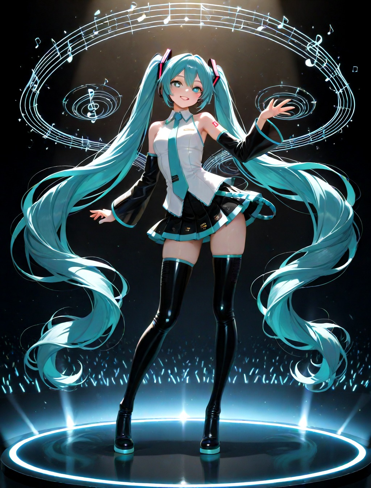
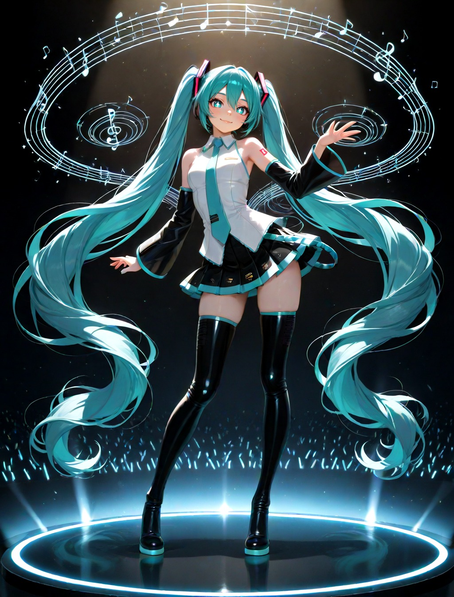

Console-Native AI Studio Features
Everything you expect from a modern desktop Stable Diffusion suite — engineered from scratch in C and bare-metal GCN OpenCL kernels to run natively on your PlayStation 4.
1. Automatic Face & Eye Fix (Built-In ADetailer)
Small faces in full-body renders only occupy a few latent cells during the base pass. GarlicDiffusion v1.16 automatically detects anime faces, crops and re-renders the face at full latent resolution (512×512 on SD 1.5 / 768×768 on SDXL), and seamlessly blends crisp eyes and expressions back into your image — with zero manual masking.


2. Easy Mode & Advanced Studio (TV + Browser)
Start creating in seconds with Easy Mode — pick from 290+ built-in anime & game characters, 120+ curated scenes, camera framing, and one-click speed/quality tiers with Hand/Eye Shield, Face Fix, and 1080p Upscale toggles. Switch to Advanced Studio anytime for full prompt weighting, negative prompts, LoRA stacking, and custom seeds.
🌱 Guided Easy Studio
Auto-tunes optimal CFG, Steps, Sampler, and anatomy-safe resolution per checkpoint (`512×512 + 1080p` on SD 1.5, native `1024×1344` on SDXL), with built-in EasyNegative Textual Inversion on every SD 1.5 render.
🎲 500-Word Batch Randomizer
Queue unattended batches with inline {a|b|c} wildcards and a 500-word SFW + optional NSFW-gated pose, outfit, lighting, and scenery randomizer — then pick your favorites in the Gallery.
♻️ Full Settings Restore
Every saved PNG embeds complete A1111 metadata. Hit Load to Studio or Re-Render Variation on any Gallery image (TV or Web UI) to auto-switch checkpoints and restore every parameter.
3. Zero-VRAM Kohya LoRA Fusion & 1080p / 4K Upscaling
💎 Zero-VRAM LoRA Fusion (22 Built-In LoRAs)
GarlicDiffusion fuses Kohya .safetensors LoRAs directly into Q8_0 / FP16 weights on the PS4 GPU with 0 MiB extra VRAM. Stack multiple LoRAs inline with <lora:name:weight>, queue sequential downloads from the in-app LoRA Manager, and rely on strict safetensors header inspection to block accidental SD 1.5 ↔ SDXL mismatches.
🔍 Bundled Real-ESRGAN Anime v3 (1080p & 4K)
Every SD 1.5 render generates at anatomy-safe 512×512 and auto-upscales to razor-sharp 1080×1080 in ~8s on PS4 Pro. On SDXL, upscale portraits to 1080×1440, widescreen wallpapers to 1920×1080, or push all the way to 3840×2160 4K UHD.
4. Hardware Thermal Guard, Gallery Folders & A1111 / Discord API
🌡️ Active Thermal Guard
Real-time SoC temperature monitoring inside the diffusion loop automatically steps down Compute Unit masks at 80–84 °C and pauses to cool at 86–88 °C so even Turbo mode stays safe on aging PS4 thermal paste.
📁 Gallery Folders & ZIP Export
Organize hundreds of renders into custom folders, star favorites, fix faces post-render from the Gallery modal, and download whole folders as .zip archives straight from your browser.
🤖 A1111 & Discord Bot API
Exposes Automatic1111-compatible REST endpoints on port 8081 (/sdapi/v1/txt2img, sd-models, samplers, upscalers) plus 1-click GitHub OTA updates directly to /data/pkg/Garlic-Diffusion.pkg.